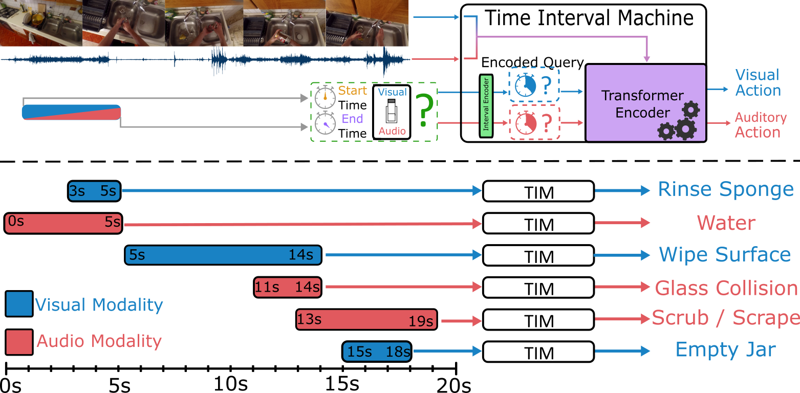
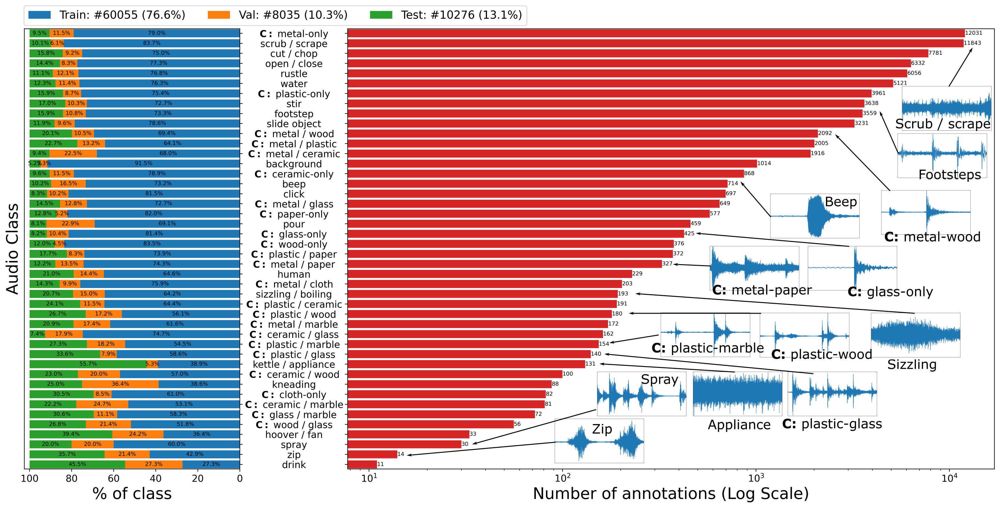

Postgraduate Researcher
I am a postgraduate researcher at the University of Bristol, supervised by Prof. Dima Damen and a member of MaVi. I am studying audio-visual video understanding, particularly in egocentric videos. The areas of research I express particular interests in are: multi-modal deep learning, egocentric video understanding (action recognition/detection) and more recently I have begun to venture into 3D.
I completed my MEng in Computer Science at the University of Bristol, achieving a first class honours, where my dissertation: “Video GANs for Human-Object Interactions” scored highly. Alongside my research, I have experience in teaching assistance for University modules I performed well in.
I have experience with many programming languages, such as: C, C++, C#, Java, Javascript, Python, Flutter and Haskell with larger experience and proficiency in Python, Javascript and C++.
Funded by the Engineering and Physical Sciences Research Council (EPSRC).
Email: jacob.chalk@bristol.ac.uk
News
- February 2024 - Paper Accepted: TIM has been accepted to CVPR 2024.
- February 2023 - Paper Accepted: EPIC-Sounds has been accepted to ICASSP 2023.
- January 2023 - New Dataset: EPIC-Sounds has been publically released.
- Septemer 2021 - New Role: Started as Postgraduate Researcher with Prof. Dima Damen.
Research
Current list of all research projects:
|
 |
TIM: A Time Interval Machine for Audio-Visual Action Recognition
Jacob Chalk*, Jaesung Huh*, Evangelos Kazakos, Andrew Zisserman, Dima Damen *: Equal Contribution Conference on Computer Vision and Pattern Recognition (CVPR), 2024 [Webpage] [arXiv] [Code] |
|
 |
EPIC-Sounds: A Large-scale Dataset of Actions That Sound
Jaesung Huh*, Jacob Chalk*, Evangelos Kazakos, Dima Damen, Andrew Zisserman *: Equal Contribution IEEE International Conference on Acoustics, Speech, and Signal Processing (ICASSP), 2023 [Webpage] [arXiv] [Code] |
Teaching
- Teaching Assistant
-
- Applied Deep Learning - 21/22, 22/23, 23/24. Webpage.
- Image Processing and Computer Vision - 23/24. Webpage.
- Computer Graphics - 20/21, 21/22, 23/24. Webpage.
- Team Project - 20/21 Webpage.
- Software Engineering Product - 19/20, 20/21. Webpage.
Miscellaneous
Presentations
- EPIC-KITCHENS Challenges - First Joint Egocentric Vision Workshop (CVPR 2024)
- EPIC-Sounds Oral Presentation - ICASSP 2023
Conference Reviewer
- ECCV - 2024
Journal Reviewer
- IEEE Transactions on Pattern Analysis and Machine Intelligence (TPAMI)
Honours and Awwards
- EgoVis 2022/23 Distinguished Paper Awards - First Joint Egocentric Vision Workshop (CVPR 2024)
- EPIC-KITCHENS Challenges Winner - First Joint Egocentric Vision Workshop (CVPR 2024)
-
- Audio-Based Interaction Recognition (2nd)
- Audio-Based Interaction Detection (2nd)
- Action Detection (3rd)
- Top 5 Third Year MEng Computer Science/Computer Science with Maths - Awarded by Netcraft (University of Bristol)